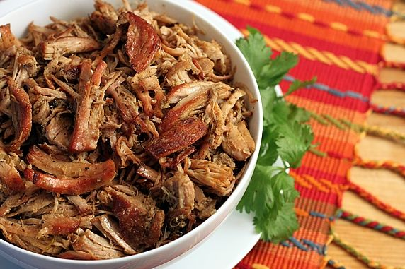

Homesick Texan Carnitas
Cuisine:
Mexican
Ingredients:
- - 3 pounds boneless pork shoulder or pork butt, cut into 2-inch cubes
- - 1/2 cup orange juice
- - 1/4 cup lime juice (from about 2 to 3 limes)
- - 4 cloves garlic, peeled and crushed
- - 1 teaspoon ground cumin
- - 1 teaspoon Kosher salt, plus more to taste
Place the pork in a large Dutch oven or heavy pot. Add the orange juice, lime juice, garlic, cumin, salt and enough water to just barely cover the meat. Bring the pot to a boil and then reduce the heat to a simmer. Simmer uncovered for two hours. Don’t touch the meat.
After two hours, increase the heat to medium-high and while occasionally stirring and turning the pieces, continue to cook for about 45 minutes, or until all of the liquid has evaporated, leaving only the rendered pork fat. Let it sizzle in this fat long enough to brown at the edges, turning pieces gently (they’ll be eager to fall apart), only as needed.
When pork has browned on both sides, it’s ready. Adjust seasonings to taste and serve on warmed tortillas with fixings.